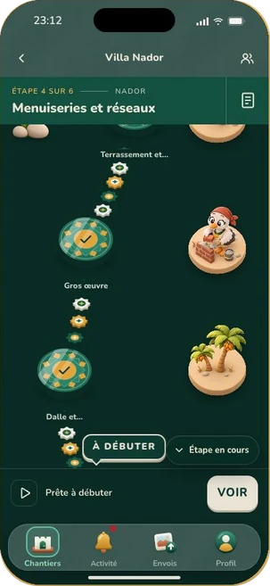
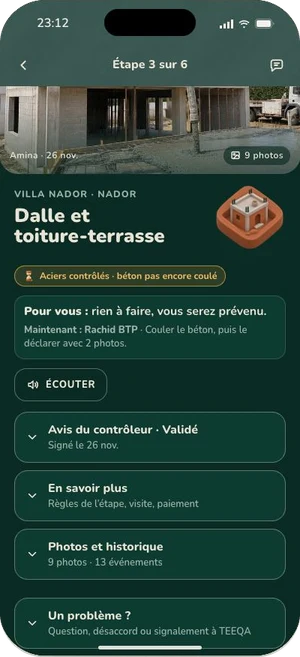
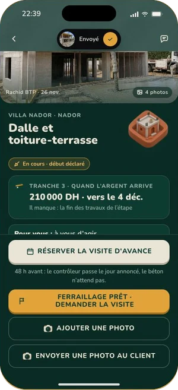

Pour qui
Les Marocains de l'étranger qui font construire, ou rénovent lourdement, sur leur terrain au Maroc.
الثقة
la confiance, vérifiée
Faire construire au Maroc depuis l'étranger,
et payer ce qui est prouvé.
Il faut envoyer pour la dalle.
Tu peux m'envoyer une photo ?
C'est bon, fais-moi confiance.
Scène fictive
1 350 km à vol d'oiseau
À chaque étape clé, TEEQA date, signe et garde la preuve. Le client décide : payer, ou attendre.
Les Marocains de l'étranger qui font construire, ou rénovent lourdement, sur leur terrain au Maroc.
Une preuve datée et signée à chaque étape : photos prises dans l'appli, avis d'un contrôleur indépendant, dossier gardé 10 ans.
TEEQA ne détient jamais l'argent des travaux, ne tranche pas un désaccord, ne certifie pas une photo.
L'entreprisedéclare l'étape, photos datées
Le contrôleurvérifie sur place, signe l'avis
Le clientvoit la preuve depuis Lyon
il paie l'entreprise lui-même
> 122 Mds DH
transférés au Maroc par les Marocains de l'étranger en 2025 (118,9 Mds DH en 2024).
Office des changes, via Hespress, 2 févr. 2026
≈ 10 %
de ces transferts vont chaque année à l'investissement, surtout le foncier et l'immobilier.
Ministre de l'Économie et des Finances, via FNH, 16 févr. 2021
40,7 % + 16,6 %
des investissements des migrants vont à l'immobilier, et 16,6 % à la construction.
HCP, Enquête nationale sur la migration internationale 2018-2019
3,4 Md€
envoyés de France vers le Maroc par les ménages en 2024.
Eurostat, via Bladi, 17 déc. 2025
≈ 932 000
immigrés nés au Maroc vivent en France (11,7 % des 7,97 millions d'immigrés).
Insee, 2025, données provisoires (calcul : 11,7 % × 7,97 M)
14,8 Mt + 8,2 %
de ciment livrées au Maroc en 2025 : le bâtiment accélère.
Ministère de l'Habitat, données APC, via Médias24, 5 janv. 2026
32
réponses à 4 questionnaires en ligne
17 oct. – 24 nov. 2026
18 sur 25 ont fait construire à distance (8) ou en ont le projet (10).
3 sur 9 concernés ont déjà payé une étape sans pouvoir la vérifier.
10 sur 18 l'utiliseraient au bon prix : 3 « certainement », 7 « probablement » ; 7 « peut-être », 1 « probablement pas ».
Prix jugé pour tout le chantier · médianes de 10 réponses en euros
Côté pros : un bureau de contrôle de l'Oriental facture 1 500 MAD une visite d'une demi-journée et préfère être payé par le service ; une entreprise de 21 à 50 salariés paie déjà plus de 200 € par mois pour trouver des clients.
Échantillon petit et non représentatif : 6 répondants seulement ont un chantier au Maroc, passé ou en projet. Aucun entretien à ce jour. À faire : entretiens, devis de 3 bureaux de contrôle.
| Acteur | Contrôle par un tiers | Suivi étape par étape | Appli partagée client, entreprise, contrôleur | Prix affiché | Zone |
|---|---|---|---|---|---|
| Famille, prochepar WhatsApp | rarement du métier | au gré des visites | non | gratuit | partout |
| Inspectimmoinspection ponctuelle | oui | une visite | non | 1 200 – 3 600 DH | Casablanca |
| Reaconsultmaîtrise d'ouvrage déléguée | oui, il pilote | oui | non | 4 à 8 % des travaux | Casablanca |
| AMG Buildingconstructeur | se suit lui-même | oui | ses clients seuls | non communiqué | Marrakech |
| Soustraitant.male plus proche | ses ingénieurs | 8 visites | rapports par message | sur devis | Casablanca, Rabat |
| TACHRONE.maannuaire du BTP | non | non | annuaire | payé par les pros | Maroc |
| TEEQA | agence payée par TEEQA | étapes clés | oui, les trois rôles | 1 500 / 5 900 DH | l'Oriental d'abord |
Sources : pages publiques des acteurs (soustraitant.ma, inspectimmo.ma, reaconsult.ma) et presse (Morocco World News, Challenge, Le360), consultées le 14 nov. 2026.
Notre décision
Concurrent direct. Nous démarrons dans l'Oriental ; eux sont à Casablanca et Rabat.
En arrivant à Casablanca et Rabat, leur proposer d'être fournisseur de contrôleurs. S'ils signent, ils entrent dans nos partenaires clés.
argent preuve déclaration · en pointillé : facultatif
Suivi
1 500 DH
≈ 140 € · par chantier
Sans visite : étapes déclarées, photos datées, dossier gardé.
Le palier de référence
Suivi contrôlé
5 900 DH
≈ 549 € · 4 visites clés
Un contrôleur indépendant passe aux 4 étapes qui seront cachées ensuite.
Chaque visite en plus
+ 1 100 DH
≈ 102 € · le même prix partout
Exemple, 6 visites : 5 900 + 2 × 1 100 = 8 100 DH.
Une règle : forfait = 1 500 DH + 1 100 DH par visite, en une ou 3 fois. Prix du pilote ; ensuite, 3 000 + 2 000 DH.
L'entreprise ne paie rien pour être invitée ni référencée ; seulement une contre-visite causée, ou, à son choix, de la visibilité.
L'agence ne nous paie rien : c'est nous qui la payons, à l'acte.
Le séquestre est facultatif : ses frais sont ceux de la banque, qui nous verse un fixe par compte.
Pilote 2027 : une visite à 1 100 DH TTC
Sur un chantier à 5 900 DH, 4 visites : 610 DH restent après tous les coûts de l'annexe de l'appli. Trop peu pour payer une équipe.
Dès 2028 : un chantier à 11 000 DH TTC, 4 visites
3 000 DH de suivi + 2 000 DH par visite, ≈ 1 024 € : au seuil « trop bon marché » de notre étude (1 000 €), la moitié de la « bonne affaire » (2 000 €).
Visite à 1 500 DH, le tarif réel Au pilote, − 706 DH par visite ; au prix cible, + 35 DH.
D'autres payeurs, jamais le client Banque, entreprises, assurance : 71 000 DH en 2029.
Estimations, pas encore mesurées : 700 DH payés à l'agence pour une visite courte, sur les points clés, à confirmer par 3 devis. Détail : previsionnel.html.
« Est-ce que ça n'en fait pas un de trop ? »
Votre question du 3 novembre, sur l'agence de contrôle
TEEQA ne juge pas : il date et il garde. L'agence est remplaçable ; la preuve et son historique restent.
Déc. 2026 – mars 2027
Préparer
2027
Pilote Nador – Driouch
2028
Tout l'Oriental
2029
Les villes des MRE
Point mort : 144 chantiers par an · besoin de financement ≈ 630 000 DH.
Volumes : hypothèses de l'équipe, à remplacer par les ventes du pilote. CA hors taxes, toutes sources. Détail : previsionnel.html.
26 itérations testées avec des panels de profils types (MRE par pays, entreprises, contrôleurs) et des tests de parcours au doigt.
152 → 0
défauts d'accessibilité
0/6 → 6/6
buts atteints au doigt
28 → 17
gestes en moyenne par but
P0 – P6
tous les parcours rejoués au clic



Ce qu'il nous reste à prouver
3 devis de bureaux de contrôle
Des entretiens avec des MRE qui construisent au Maroc
10 chantiers payants
Merci. Vos questions.
→ Espace suivante · ← précédente · N notes · P fenêtre de l'orateur · F plein écran · B écran noir · D démo · numéro + Entrée aller à · ? cette aide